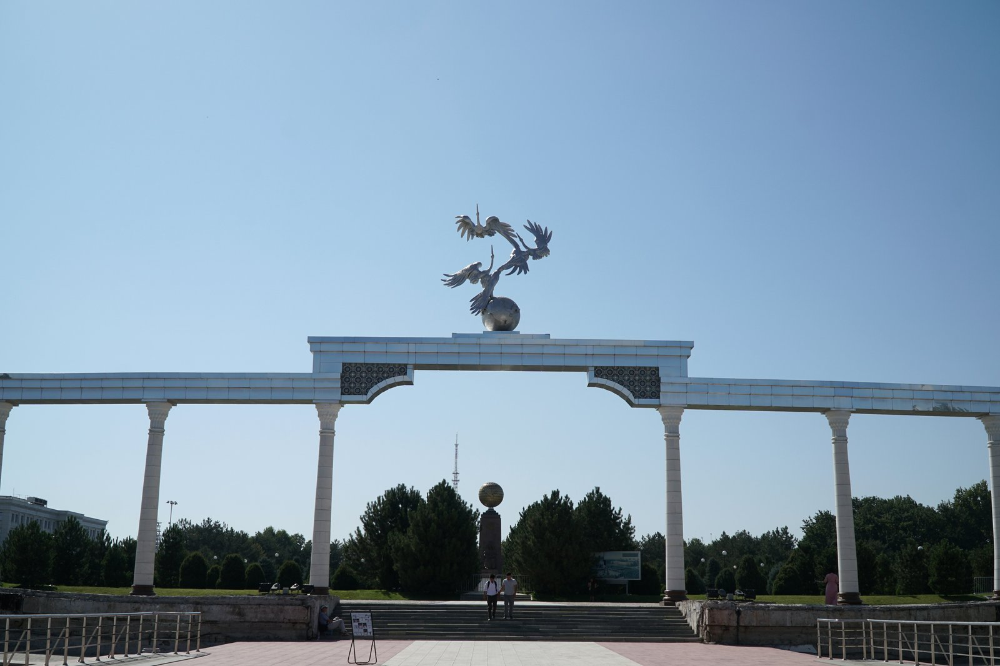

Uzbekistan's state symbols: how the flag, emblem and anthem were adopted
How and when independent Uzbekistan's three state symbols were adopted: the State Flag on 18 November 1991; the State Emblem on 2 July 1992; the State Anthem on 10 December 1992. The meaning of each, what the colors and symbols stand for, and who created them. A facts-based, sourced history.

Having declared independence on 31 August 1991, Uzbekistan adopted three state symbols — a flag, an emblem and an anthem — over the following year and a half. They are marks of the young state's sovereignty and express national identity, history and values. Below the adoption date, meaning and composition of each symbol are set out on the basis of official and reference sources, with facts.
The State Flag — 18 November 1991
The State Flag of the Republic of Uzbekistan was approved by the Supreme Council on 18 November 1991 — it was the first state symbol adopted after independence. The flag consists of three horizontal bands — azure (light blue), white and green — separated by two narrow red stripes (fimbriations).
The meaning of the colors: azure is a symbol of clear skies and pure water, and also the traditional color of the Turkic peoples; white is a sign of peace, purity and good fortune; green stands for nature, new life and a good harvest; the red stripes symbolize the force of life. In the upper (azure) band there is a white crescent and twelve white five-pointed stars arranged in three rows. The crescent symbolizes the birth of the newly independent state and historical tradition; the twelve stars allude to the months of the year and the constellations of the zodiac, and to the astronomical tradition developed in medieval Uzbekistan.
The State Emblem — 2 July 1992
The State Emblem of the Republic of Uzbekistan was adopted at the 10th session of the Supreme Council on 2 July 1992. At the center of the emblem is the legendary Huma (Humo) bird with outstretched wings — considered a symbol of happiness, peace and the love of freedom.
The other symbols on the emblem: a rising sun, mountains and a green valley; two rivers flowing through the valley — the Amu Darya and the Syr Darya; and a wreath of cotton on the left and ears of wheat on the right. Cotton and wheat represent the country's prosperity and wealth; the ribbon in the colors of the Uzbek flag that binds them signifies the unity of the different peoples living in the republic. At the top of the emblem, within an eight-pointed star, are a crescent and a star — a mark of Islamic tradition and national identity.
The State Anthem — 10 December 1992
The State Anthem of the Republic of Uzbekistan was adopted at the 11th session of the Supreme Council on 10 December 1992. The music was composed by Mutal Burhonov — this melody was originally written (in 1947) for the anthem of the Uzbek Soviet Socialist Republic and was kept after independence. The new lyrics were written by the people's poet Abdulla Oripov.
The symbols and Independence Square
The images on the state symbols are also reflected in the architecture of the capital, Tashkent. Atop the "Ezgulik" (Good) arch on Independence Square stand storks echoing the Humo bird of the emblem; and above the Independence Monument on the square is a globe bearing a map of Uzbekistan. These symbols hold a central place at national holidays and official ceremonies.
The legal basis
The adoption of the three symbols was part of the state-building process that followed the declaration of independence on 31 August 1991. The Constitution of Uzbekistan, adopted on 8 December 1992, enshrined the state symbols — flag, emblem and anthem — at constitutional level. The detailed description of the symbols and the rules for their use are set by separate laws.
A note
This article is based on facts about the history of the state symbols. The dates and descriptions are given in accordance with official sources. Sources: the official website of the President of the Republic of Uzbekistan (president.uz) — State Symbols; Wikipedia (Flag of Uzbekistan; Emblem of Uzbekistan; State Anthem of Uzbekistan); Britannica (Flag of Uzbekistan).
Sources
- president.uz — The State symbols (bayroq 18.11.1991, gerb 02.07.1992, madhiya 10.12.1992)
- Wikipedia — Flag of Uzbekistan (18 November 1991; ranglar, yarim oy, 12 yulduz)
- Wikipedia — Emblem of Uzbekistan (2 July 1992; Humo, Amudaryo/Sirdaryo, paxta va bug‘doy)
- Wikipedia — State Anthem of Uzbekistan (10 December 1992; Mutal Burhonov, Abdulla Oripov)
- Britannica — Flag of Uzbekistan (rang va ramzlar tavsifi)